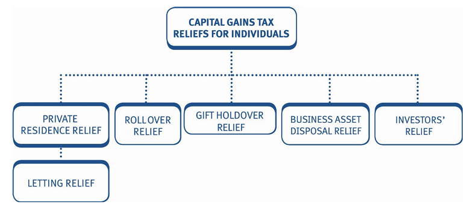
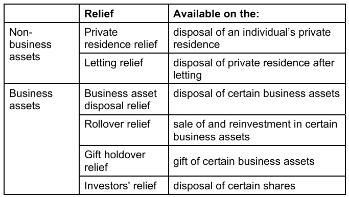
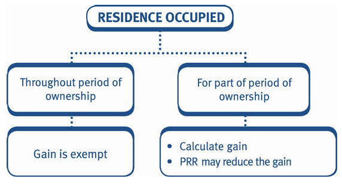

Chapter 20: CGT: Reliefs for individuals
- calculate the chargeable gain when a private residence is disposed of.
- explain and apply business asset disposal relief.
- explain and apply investors’ relief.
- explain and apply capital gains tax reliefs:
- rollover relief.
- gift holdover relief for the gift of business assets.
- rollover relief.
- understand basic capital gains tax planning.

In certain situations, the tax payable on the disposal of an asset may be reduced or a gain may be delayed by claiming capital gains tax reliefs. The main reliefs available to individuals are as follows:

1 Private residence relief (PRR)
PRR applies when an individual disposes of:
- a dwelling house (including normally up to half a hectare of adjoining land)
- which has at some time during their ownership been their only or main private residence.
The relief applies where the main residence has been occupied for either the whole or part of the period of ownership.

1.1 Calculating the relief
Where there has been a period of absence from the main residence the procedure is:
- Calculate the gain on the disposal of the property.
- Compute the total period of ownership.
- Calculate the periods of occupation (covered below).
- Calculate the PRR as follows:
Gain × (Periods of occupation/Total period of ownership)
- Deduct the PRR from the gain on the property.
Periods of occupation
The period of occupation includes periods of both actual occupation and deemed occupation.
Periods of deemed occupation are:
A. the last nine months of ownership (always exempt, unconditionally as long as the dwelling has been the main residence at some point) B. up to three years of absence for any reason C. any period spent living overseas due to employment D. up to four years of absence as a result of working elsewhere in the UK (employed or self-employed).
The absences in (b) to (d) must be preceded and followed by a period of actual occupation.
The condition to reoccupy the property after the period of absence does not need to be satisfied for (c) and (d) where an employer requires the individual to work elsewhere immediately, thus making it impossible to resume occupation.
However, they have said that you should provide brief explanatory notes for periods of deemed occupation in PRR questions, and that such explanations will earn marks.
Ownership of more than one residence
Where there is ownership of more than one residence, the individual is entitled to nominate which of them is to be treated as the main residence for capital gains tax purposes by notifying HM Revenue & Customs (HMRC) in writing.
The election must be made within two years of acquiring an additional residence, otherwise it is open to HMRC, as a question of fact, to decide which residence is the main residence.
A married couple or those in a civil partnership can only have one PRR between them, despite being separate taxpayers.
1.1.0.1 Example 1: Private residence relief
On 1 May 1998 Karim purchased a house in Southampton for £25,000. He occupied the house as follows:
| Period | Months |
|---|---|
| Lived in the house | 14 |
| Lived in a rental property in Southampton | 27 |
| Employed overseas | 12 |
| Lived with relatives | 4 |
| Lived in the house | 161 |
| Lived in a rental property in Newcastle | 115 |
Karim remained in the rental property in Newcastle until he sold his Southampton house on 1 February 2026 for £95,000.
Calculate the chargeable gain after reliefs, if any, arising on the disposal of the house on 1 February 2026.
Solution
Chargeable gain for Private residence
| £ | |
|---|---|
| Sale proceeds | 95,000 |
| Less: Cost | (25,000) |
| Gain | 70,000 |
| Less: Principal Private Residence Relief (W) | (47,718) |
| Chargeable gain after reliefs | 22,282 |
Working – Chargeable and exempt periods of ownership
| Period | Total | Exempt | Chargeable |
|---|---|---|---|
| Lived in house (actual occupation) | 14 | 14 | |
| Lived in Southampton rental (absent – any reason) | 27 | 27 | |
| Employed overseas (absent – employed abroad) | 12 | 12 | |
| Lived with relatives (absent – any reason) | 4 | 4 | |
| Lived in house (actual occupation) | 161 | 161 | |
| Lived in Newcastle rental (absent – note 1) | 106 | 106 | |
| Lived in Newcastle rental (final 9 months) | 9 | 9 | |
| Number of months | 333 | 227 | 106 |
Total period of ownership (106 + 227) = 333 months.
Exempt element of gain = (£70,000 × 227/333) = £47,718.
n1: After Karim left his residence to live in Newcastle he never returned. Consequently, the exemption for the remaining 5 months (36 months – 27 months – 4 months) for ‘any reason’ is not available as there was not actual occupation both before and after the period of absence.
In contrast, the final nine months of ownership is always exempt unconditionally, as long as the dwelling has been the taxpayer’s main residence at some point, so there is no such restriction.
Where a chargeable gain arises on a residential property, but is not fully covered by PRR, then the gain is chargeable at CGT rates of 18% or 24% depending on the level of the taxpayer’s taxable income and a payment on account will be due.
1.1.0.2 Example 2: Private residence relief
Andrea bought a house on 1 January 2004 and sold it on 30 September 2025 making a gain of £189,000.
She occupied the house as follows:
| Period | Months |
|---|---|
| Lived in the house | 24 |
| Employed overseas | 78 |
| Travelled the world | 66 |
| Lived in the house | 93 |
Andrea made no other disposals in the tax year 2025/26 and had taxable income of £30,700.
Calculate Andrea’s capital gains tax liability for the tax year 2025/26 assuming all available reliefs are claimed.
Solution
Business use
Where a house, or part of it, is used wholly and exclusively for business purposes, this part loses its PRR and becomes taxable. It should be noted that:
- The taxpayer cannot benefit from the rules of deemed occupation for any part of the property used for business purposes.
- However, where part of the property was used for business purposes but was also at any time used as the taxpayer’s main residence, the exemption for the last nine months applies to the whole property.
- The nine month exemption does not however apply to any part of the property used for business purposes throughout the whole period of ownership.
1.1.0.3 Example 3: Private residence relief
On 30 June 2025 Alex sold his house for £125,000, resulting in a capital gain of £70,000. The house had been purchased on 1 July 2011, and one of the five rooms had always been used for business purposes.
Calculate the chargeable gain after reliefs arising on the disposal of the house.
Solution
Alex owned the house for 14 years and used 1/5th of the house (one of the five rooms) for business purposes. The nine month exemption does not apply to the part of the property used for business purposes as it has never been used at any time for private purposes.
The chargeable gain is therefore: (£70,000 × 1/5) = £14,000
| £ | |
|---|---|
| Chargeable gain before reliefs | 70,000 |
| Less: PRR (£70,000 × 4/5) | (56,000) |
| Chargeable gain after reliefs | 14,000 |
1.1.0.4 Example 4: Private residence relief
On 30 September 2025 Hessa sold her house for £150,000, resulting in a chargeable gain before reliefs of £60,000. The house had been purchased on 1 October 2016, and one of the seven rooms had always been used for business purposes.
Calculate the chargeable gain after reliefs arising on the disposal of the house.
Solution
In the TX examination, whilst you could be asked to calculate a chargeable gain after reliefs for a private residence that has also been used for commercial purposes, you will not be expected to calculate the capital gains tax liability for such a mixed use property.
Letting relief
Letting relief is available where an individual’s main residence is let out for residential use.
It only applies when the owner lets part of the property whilst still occupying the remainder. However, if the owner has a lodger who lives as a member of the owner’s family, sharing the accommodation and taking meals with them, then full PRR will be available and letting relief will not be considered.
Letting relief does not apply to a let property that is not the owner’s main residence (e.g. buy-to-let properties), or to main residences that are subsequently fully let out.
Letting relief is the lowest of:
- £40,000
- the amount of the gain exempted by the normal PRR rules
- the part of the gain (still in charge) attributable to the letting period.
1.1.0.5 Example 5: Letting relief
Nicholas bought a house in Luton on 1 June 1999. He occupied the house as follows:
| Period | Months |
|---|---|
| Lived in the house | 12 |
| Travelled the world | 84 |
| Lived in the house | 217 |
Nicholas rented out one quarter of his house in the final period of occupation. The tenant did not share any living space with Nicholas. He sold the house on 1 July 2025 realising a chargeable gain before reliefs of £209,730.
Calculate the chargeable gain after reliefs arising on the sale of the house.
Solution
| £ | |
|---|---|
| Chargeable gain before reliefs | 209,730 |
| Less: PRR (W1) | (142,724) |
| Chargeable gain after PRR | 67,006 |
| Less: Letting relief (W2) | (34,843) |
| Chargeable gain after reliefs | 32,163 |
(Workings 1 PRR)
| Period | Total | Exempt | Chargeable |
|---|---|---|---|
| Lived in house | 12 | ||
| Actual occupation | 12 | ||
| Travelled the world | 84 | ||
| 3 years – any reason | 36 | ||
| Rest of period – chargeable | 48 | ||
| Lived in house | 217 | ||
| Last 9 months | 9 | ||
| Rest of period: | |||
| – 3/4 actual occupation | 156 | ||
| – 1/4 let * | 52 | ||
| Total months | 313 | 213 | 100 |
- 1/4 let = (217 - 9) × 1/4
PRR = (£209,730 × 213/313) = £142,724
(Workings 2 letting relief)
One quarter of the house was let in the final chargeable period and therefore, letting relief is available for this period.
Letting relief = lowest of:
| Relief type | £ |
|---|---|
| 1. Maximum | 40,000 |
| 2. PRR | 142,724 |
| 3. Gain on letting (£209,730 × 52/313) | 34,843 |
| Letting relief | 34,843 |
An alternative working for the gain on letting is (£67,006 × 52/100) = £34,843. This uses the gain after PRR and only the chargeable months. Either method would be acceptable in the exam.
1.1.0.6 Example 6: Letting relief
On 30 September 2025, Eleni made a gift of a house to her grandson, Kostas. The house had been bought by Eleni on 1 September 2012 for £45,000 and was extended at a cost of £10,600 during June 2013. A market value of £140,000 at 30 September 2025 had been agreed by HMRC.
Eleni occupied the house as her main residence until 30 September 2021 a period of 109 months. During this period, Eleni rented out one third of the house for 96 months. The tenant did not share any living space with Eleni.
Eleni then went to live with her sister for the remaining 48 months, until 30 September 2025.
Calculate the chargeable gain after reliefs arising on the gift.
Solution
1.1.0.7 Example 7: Letting relief
On 31 August 2025, Puja sold her house, realising a gain of £50,600.
Puja had bought the house on 1 September 2020 and occupied the house as her main residence for the whole period of ownership.
From 1 September 2024, Puja rented out a room in the house to a tenant, who was free to use any part of the house and who took meals with Puja.
Calculate the chargeable gain after reliefs arising on the disposal of the house.
Solution
| £ | |
|---|---|
| Chargeable gain | 50,600 |
| Less: PRR | (50,600) |
| Chargeable gain after reliefs | 0 |
Note: Puja occupied the property for the entire period of ownership, meaning that the whole period is exempt. Since the tenant had access to the whole property and shared meals with Puja, letting relief is not required, as full PRR is still available.
2 Business asset disposal relief
The rate of tax on disposals of business assets which qualify for business asset disposal relief (BADR) is 14%.
The relief operates as follows:
The first £1 million of gains on ‘qualifying business disposals’ is taxed at 14%, regardless of the level of the taxpayer’s income.
Any gains above the £1 million limit are taxed at the usual rate depending on the individual’s taxable income.
Gains qualifying for BADR are set against any unused basic rate band (BRB) before non-qualifying gains.
The 14% CGT rate is calculated after the deduction of:
- allowable losses, and
- the AEA.
However, the taxpayer can choose to set losses (other than any losses on assets that are part of the disposal of the business) and the AEA against non-qualifying gains first, in order to maximise the relief.
It is therefore helpful to keep gains which qualify for BADR separate from those which do not qualify. The relief must be claimed within 12 months of the 31 January following the end of the tax year in which the disposal is made.
For disposals in the tax year 2025/26, the relief must be claimed by 31 January 2028.
The £1 million limit is a lifetime limit which is diminished each time a claim for the relief is made.
Qualifying business disposals
The relief applies to the disposal of:
the whole or a substantial part of an unincorporated trading business carried on by the individual either alone or in partnership
assets of the individual’s or a partnership’s trading business that has now ceased
shares; provided:
- the shares are in the individual’s ‘personal trading company’, and
- the individual is an employee of the company (part-time or full-time).
For the purposes of the TX examination an individual’s ‘personal trading company’ is one in which the individual:
- owns at least 5% of the ordinary shares
- which carry at least 5% of the voting rights.
Note that:
- the disposal of an individual business asset used for the purposes of a continuing trade does not qualify. There must be a disposal of the whole of the trading business or a substantial part (meaning part of the business which is capable of separate operation). The sale of an asset in isolation does not qualify.
- Where the disposal is a disposal of assets (i.e. not shares), relief is not available on gains arising from the disposal of those assets held for investment purposes.
- There is no requirement to restrict the gain qualifying for relief on shares by reference to any non-business assets held by the company.
- There are no minimum working hours for an employee to qualify.
Qualifying ownership period
In the case of the disposal of a business it must have been owned by the individual making the disposal in the two years prior to the disposal.
In the case of shares the individual must have been an employee of the company and the company must have been their personal trading company for at least two years prior to the disposal.
Where the disposal is an asset of the individual’s or the partnership’s trading business that has now ceased, the business must have been owned for at least two years prior to the date of cessation and the disposal of the asset must also take place within three years of the cessation of trade.
2.0.0.1 Example 1: Business asset disposal relief
In the tax year 2025/26, Katie sold her trading business which she set up in 2013 and realised the following gains and losses:
| Asset | £ |
|---|---|
| Factory | 275,000 |
| Goodwill | 330,000 |
| Warehouse | (100,000) |
| Commercial investment property | 191,000 |
Katie also sold her shares in an unquoted trading company and realised a gain of £400,000. She owned 25% of the ordinary shares of the company, which she purchased ten years ago. She has worked for the company on a part time basis for the last three years.
Katie has not made any other capital disposals in the tax year 2025/26, but she has capital losses brought forward of £7,800. She has never claimed any BADR in the past.
Her only source of income is a trading profit of £43,920.
Calculate Katie’s capital gains tax payable for the tax year 2025/26.
Solution
| Qualifying for BADR | Not qualifying for BADR | |
|---|---|---|
| Sale of investment property | 191,000 | |
| Sale of trading business: | ||
| Factory | 275,000 | |
| Goodwill | 330,000 | |
| Warehouse (Note 2) | (100,000) | |
| Total trading business | 505,000 | |
| Sale of trading company shares | 400,000 | |
| Total gains before reliefs | 905,000 | 191,000 |
| Less: AEA (Note 3) | 0 | (3,000) |
| Less: Capital losses b/f (Note 3) | 0 | (7,800) |
| Taxable gains | 905,000 | 180,200 |
Capital gains tax
| £ | |
|---|---|
| Qualifying gains (£905,000 × 10%) | 90,500 |
| Non-qualifying gains (£180,200 × 24%) (Note 4) | 43,248 |
| Total CGT payable | 133,748 |
n4: that there is no need to calculate the remaining BR band because even if Katie had no taxable income, the gains qualifying for BADR are > £37,700, therefore the non-qualifying gains must all be taxed at 24%.
n3: Capital losses and the AEA are first set against gains not qualifying for BADR.
2.0.0.2 Example 2: Business asset disposal relief
Luka disposed of a business in November 2025, realising a net chargeable gain of £660,000. He had started the business in January 2016 and has used all the chargeable assets for business use throughout the period of ownership.
He has previously claimed BADR for qualifying gains of £400,000. He also disposed of a holiday home in February 2026, realising a chargeable gain of £11,900. The home had never been his main residence.
Luka had taxable income of £40,000 in the tax year 2025/26.
Calculate Luka’s capital gains tax payable for the tax year 2025/26.
Solution
2.0.0.3 Example 3: Business asset disposal relief
In the tax year 2025/26 Ari sold shares in Dual Ltd, an unquoted trading company, and realised a gain of £43,000. Ari has worked for Dual Ltd for eight years and has owned 10% of the ordinary shares of the company for the last five years.
Ari set up a trading business in 2019 and in the tax year 2025/26 they sold a warehouse used in the business, realising a gain of £243,000.
Ari’s trading profit was £38,270 in the tax year 2025/26. They did not have any other taxable income.
In the tax year 2026/27 Ari sold the rest of the business and realised the following gains:
- Factory: £649,500
- Goodwill: £6,700
Ari also sold an antique table in the tax year 2026/27 and realised a chargeable gain of £3,225.
Ari’s trading profit in the tax year 2026/27 was £51,620, and prior to the tax year 2025/26 Ari has claimed BADR of £350,000.
Calculate Ari’s CGT payable for the tax years 2025/26 and 2026/27.
Assume that the AEA and rates for the tax year 2025/26 continue in the future.
Solution
3 Investors’ relief
BADR is only available on a disposal of shares if the shares are in the individual’s personal trading company (i.e. the individual holds 5% of the shares) and the individual is also an officer or employee of the company.
Investors’ relief (IR) extends the benefits of BADR to certain investors who do not meet the conditions for BADR.
IR applies to the disposal of:
- unlisted ordinary shares in a trading company (including AIM shares).
- subscribed for (i.e. newly issued shares).
- which have been held for a minimum period of three years.
- by an individual that is not an employee of the company.
IR is subject to a separate lifetime limit of £1 million of qualifying gains, which are taxed at 14%.
3.0.0.1 Example 1: Investors’ relief
Alma subscribed for 50,000 £1 ordinary shares in Artwell Ltd, an unquoted trading company, in June 2022, at their par value.
She needed to raise funds to start her own business so she sold all the shares in Artwell Ltd in January 2026 for £140,700.
Alma has never worked for Artwell Ltd and is a higher rate taxpayer. Alma has not previously claimed investors’ relief.
Calculate Alma’s capital gains tax payable for the tax year 2025/26.
Solution
| £ | |
|---|---|
| Sale proceeds | 140,700 |
| Less: Cost | (50,000) |
| Chargeable gain | 90,700 |
| Less: AEA | (3,000) |
| Taxable gains | 87,700 |
Capital gains tax
| CGT payable | |
|---|---|
| Qualifying gains for IR (£87,700 × 14%) | 12,278 |
Alma can claim investors’ relief on the sale as she subscribed for shares, in an unlisted trading company, and has held them for more than three years. Additionally, she has never worked for Artwell Ltd.
3.0.0.2 Example 2: Investors’ relief
Dwight subscribed for 95,000 £1 ordinary shares in Dart Ltd, at par value, on 1 November 2022.
Dwight purchased a 6% shareholding in Beta Ltd in June 2023 for £40,000.
In December 2025 Dwight sold the shares in Dart Ltd for £150,000 and the shares in Beta Ltd for £54,000.
Both companies are unquoted trading companies and Dwight has never worked for either company.
Dwight has not previously claimed investors’ relief or business asset disposal relief and had taxable income of £60,000 in 2025/26.
Calculate Dwight’s CGT liability for 2025/26.
Solution
4 Replacement of business asset relief (Rollover relief)
Rollover relief (ROR) allows the gain arising on the disposal of a qualifying business asset to be rolled over (i.e. deferred) when the sale proceeds are reinvested in a replacement qualifying business asset.
The relief is available to both individuals and companies.
4.1 The relief ‘Rollover / Deferred’
The relief operates as follows:
The gain arising on the disposal of the qualifying business asset is deducted from (rolled over against) the acquisition cost of the replacement asset.
Provided the net sale proceeds are fully reinvested, no tax is payable at the time of the disposal.
ROR effectively increases the gain arising on the disposal of the replacement asset, as its base cost is reduced by the amount of deferred gain.
Gains may be ‘rolled over’ a number of times such that a tax liability will only arise when there is a disposal without replacement.
When the deferred gain crystallises, it is taxed at the appropriate CGT rate applicable at that time (not the rate applicable at the time of the deferral).
The relief is not automatic, it must be claimed.
An individual must claim the relief within 4 years of the later of the end of the tax year in which the:
- disposal is made, and
- replacement asset is acquired.
A disposal in the tax year 2025/26 which is reinvested in a new asset in the tax year 2026/27 requires a claim by 5 April 2031.
4.1.0.1 Example 1: Rollover relief
Anaya purchased an asset qualifying for ROR in January 2008 for £160,000. In August 2025, she sold the asset for £180,000 and spent £200,000 in November 2025 on a new qualifying asset.
Calculate the chargeable gain arising on the disposal of the asset assuming that ROR is claimed.
Calculate the base cost of the new asset acquired.
Solution
| Gain on disposal of asset | £ |
|---|---|
| Sale proceeds | 180,000 |
| Less: Cost | (160,000) |
| Gain before ROR | 20,000 |
| Less: ROR (deferred gain) | (20,000) |
| Chargeable gain | 0 |
| Base cost of new asset | £ |
|---|---|
| Acquisition cost | 200,000 |
| Less: ROR (deferred gain) | (20,000) |
| Revised base cost | 180,000 |
4.2 Conditions
To qualify for ROR, there must be a disposal of, and reinvestment in, a qualifying business asset, within the qualifying time period. The replacement asset must be brought into business use when it is acquired. Qualifying business assets The main categories of assets qualifying for ROR on a disposal by an individual are:
- goodwill
- land and buildings
- fixed plant and machinery (i.e. not movable).
Both the old and the replacement assets must be qualifying business assets which are used in the trade.
4.3 Qualifying time period
The replacement assets must be acquired within a period:
- beginning one year before, and
- ending three years after the date of sale of the old asset.
4.3.0.1 Example 2: Rollover relief
Jenna purchased a warehouse in February 2014 for £170,000. In July 2025, she sold the warehouse for £300,000. She used the warehouse for the purposes of her trade throughout the period of ownership.
In December 2027 Jenna bought a new warehouse for £360,000 for the purposes of her trade. She plans to sell the warehouse in January 2029 for £550,000.
Calculate the chargeable gains arising on the two sales assuming rollover relief is claimed.
Solution
First warehouse – July 2025 – 2025/26
| Sale proceeds | £ |
|---|---|
| Less: Cost | (170,000) |
| Total gain before relief | 130,000 |
| Less: ROR (Note) | (130,000) |
| Chargeable gain | 0 |
Note:
- The full gain of £130,000 can be rolled over (i.e. deferred) as:
- the asset disposed of is a qualifying business asset
- the replacement asset is a qualifying business asset
- the reinvestment has been made in December 2027 (i.e. within the qualifying period of July 2024 to July 2028)
- the amount reinvested exceeds the sale proceeds received (i.e. purchase price of new warehouse of £360,000 exceeds the sale proceeds of £300,000).
Second warehouse – January 2029 – 2028/29
| £ | £ | |
|---|---|---|
| Sale proceeds | 550,000 | |
| Less: Base cost | ||
| Cost | 360,000 | |
| Less: ROR | (130,000) | |
| Total base cost | (230,000) | |
| Chargeable gain | 320,000 |
Note: This gain can also be rolled over (i.e. deferred) if a qualifying replacement asset is purchased in the qualifying time period.
However, assuming the gain is not rolled over, it will be taxed in the tax year 2028/29 at 18% or 24% depending on the level of taxable income in that tax year.
The gain does not qualify for BADR as this is the disposal of an individual asset used for the purposes of a continuing business. The business itself is not being disposed of.
4.3.0.2 Example 3: Rollover relief
Feng acquired a freehold commercial building in April 2007. In May 2010 he sold the building for £100,000 and realised a gain of £56,360. In August 2011, he bought another freehold commercial building for £140,000 and this was sold in November 2025 for £380,000.
All of the buildings were used for the purposes of a trade by Feng.
Calculate the chargeable gain that arises in the tax year 2025/26, assuming rollover relief was claimed on the sale of the first building.
Solution
Partial reinvestment of proceeds
Full ROR is only available when all of the net sale proceeds from the sale of the old asset are reinvested.
Where there is partial reinvestment of the proceeds, part of the gain is chargeable at the time of the disposal.
The gain that is chargeable (cannot be rolled over) is the lower of:
- the amount of the proceeds not reinvested
- the full gain.
4.3.0.3 Example 4: Rollover relief
Sherifa bought a factory in September 2008 and in December 2025, wishing to move to a more convenient location, she sold the factory for £750,000. The cost of the factory was £635,000.
Sherifa moved into a rented factory until March 2026 when she purchased and moved into a new factory.
Calculate the amount of the gain, which is chargeable, if any, on the sale of the original factory and calculate the base cost of the new factory assuming the new factory was purchased for:
- £700,000, or
- £550,000
Solution
Non-business use
Full ROR is only available where the old asset being replaced was used entirely for trade purposes throughout the trader’s period of ownership.
Where this condition is not met, ROR is still available but it is scaled down in proportion to the non-trade use.
4.3.0.4 Example 5: Rollover relief
Robert acquired a freehold commercial building in April 2006 for £65,500. He only used 60% of the freehold building for the purposes of his trade. The building was sold in November 2025 for £162,000.
A replacement building was acquired in January 2025 for £180,000 and this was used 100% for trade purposes by Robert.
The replacement building was sold for £250,000 in May 2026.
Calculate the gain rolled over and the chargeable gains arising on the disposals in November 2025 and May 2026.
Solution
First building – November 2025 – 2025/26
| £ | |
|---|---|
| Sale proceeds | 162,000 |
| Less: Cost | (65,500) |
| Chargeable gain before reliefs | 96,500 |
Note: The asset disposed of is a qualifying business asset for ROR purposes, but as only 60% of the building has been used for trade purposes, the gain eligible for ROR must be restricted to 60%.
| Business portion (60%) | Non-business portion (40%) | |
|---|---|---|
| Split of chargeable gain | 57,900 | 38,600 |
| Less: ROR (Note) | (57,900) | (n/a) |
| Chargeable gain | 0 | 38,600 |
Note:
- the replacement asset is a qualifying business asset, used 100% for the purposes of the trade.
- the reinvestment has been made in January 2025 (i.e. within the qualifying period of November 2024 to November 2028).
- the amount reinvested for the purposes of the trade (i.e. purchase price of new building of £180,000) exceeds the sale proceeds received on the first building relating to the trade use of the building (i.e. £162,000 × 60% = £97,200).
- therefore ROR is available on all of the business portion of the gain.
Sale of replacement building – May 2026 – 2026/27
| Sale proceeds | £ |
|---|---|
| Less: Base cost | |
| Cost | 180,000 |
| Less: ROR | (57,900) |
| Total base cost | (122,100) |
| Chargeable gain | 127,900 |
Note:
Assuming there is no replacement of this asset and the rates of CGT remain unchanged, the gains in the tax years 2025/26 and 2026/27 will be taxed at 18% or 24% depending on the level of taxable income in those years.
The gains do not qualify for BADR as the disposal of an individual asset used for the purposes of a continuing business does not qualify. The business itself is not being disposed of.
4.3.0.5 Example 6: Rollover relief
Hadley purchased a factory in November 1999 and not needing all the space, he let out 15% of it.
In August 2025 he sold the factory for £560,000 and realised a capital gain of £45,000.
In October 2025 Hadley bought another factory, for £500,000, which he used 100% for business purposes. He claimed ROR.
- Calculate the chargeable gain arising on the disposal in August 2025.
- Calculate the base cost of the new factory.
Solution
4.4 Depreciating assets
ROR is modified where the new asset is a depreciating asset:
If the replacement asset acquired is a depreciating asset, the gain cannot be rolled over. Instead, it is deferred until the earliest of the following three events:
- Disposal of replacement asset.
- The replacement asset ceases to be used for the purposes of the trade.
- Ten years from the date of acquisition of the replacement asset.
- The deferred gain is not deducted from the cost of the replacement asset.
- The deferred gain is just ‘frozen’ and becomes chargeable on the earliest of the three events above.
- When the deferred gain crystallises, it is taxed at the appropriate CGT rate applicable at that time (not the rate applicable at the time of the deferral).
- If prior to the deferred gain crystallising, a non-depreciating asset is bought, then the original deferred gain can now be rolled over.
A depreciating asset is a wasting asset (i.e. with a predictable life of 50 years or less), or an asset that will become a wasting asset within ten years.
The only depreciating assets that you need to be aware of for the purposes of the TX examination are:
- Fixed plant and machinery
- Leasehold property with ≤ 60 years remaining on the lease.
4.4.0.1 Example 1: Depreciating assets
Lily purchased a freehold factory in June 1997 for £250,000. In May 2024 she sold it for £420,000 and in June 2024 bought fixed plant and machinery for £450,000. In March 2026, Lily sold the fixed plant and machinery for £475,000.
Calculate the chargeable gains arising in the tax years 2024/25 and 2025/26 assuming Lily claims ROR relief where possible.
Solution
Freehold factory – May 2024 – 2024/25
| £ | |
|---|---|
| Sale proceeds | 420,000 |
| Less: Cost | (250,000) |
| Gain before relief | 170,000 |
| Less: Deferred gain (Note) | (170,000) |
| Chargeable gain | 0 |
Note:
- the asset disposed of is a qualifying business asset
- the replacement asset is a qualifying business asset, but is a depreciating asset (fixed plant and machinery)
- the reinvestment has been made in June 2024 (i.e. within the qualifying period of May 2023 to May 2027)
- the amount reinvested (i.e. the purchase price of the new plant and machinery of £450,000) exceeds the sale proceeds received on the factory of £420,000
- therefore all of the gain can be deferred, but the deferred gain is not deducted from the base cost of the plant and machinery
- the gain of £170,000 is frozen and becomes chargeable on the earliest of:
- the sale of the fixed plant and machinery (March 2026)
- the date the plant and machinery ceases to be used in the trade (presumably March 2026)
- ten years from the acquisition of the plant and machinery (June 2034).
Sale of plant and machinery – March 2026 – 2025/26
| £ | |
|---|---|
| Sale proceeds | 475,000 |
| Less: Cost | (450,000) |
| Capital gain on plant and machinery | 25,000 |
| Plus: Deferred gain becomes chargeable | 170,000 |
| Total chargeable gains | 195,000 |
Note: Assuming there is no replacement of this asset the gains in 2025/26 will be taxed at 18% or 24% depending on the level of taxable income in that year.
The gains do not qualify for BADR as this is the disposal of an individual asset used for the purposes of a continuing business. The business itself is not being disposed of.
4.4.0.2 Example 2: Depreciating assets
Amir purchased a freehold factory in May 1999 and in May 2013 he sold it for £350,000 realising a capital gain of £150,000. In July 2015 Amir bought fixed plant and machinery for £400,000. In March 2027 Amir sold the fixed plant and machinery for £500,000.
Calculate the chargeable gains arising in respect of the sale of the freehold factory and the fixed plant and machinery, assuming Amir claims ROR where possible.
Clearly identify in which tax year the gains arise.
Solution
5 Gift of business assets – gift holdover relief (gift relief)
The gift of an asset is a chargeable disposal, which gives rise to a capital gains tax liability for the donor. However, the donor has not received any funds with which to pay the tax.
Gift relief is referred to as gift holdover relief by the ACCA. Both terms are acceptable to use in the examination.
Gift holdover relief (GR) allows the gain arising on the gift of qualifying business assets to be held over (i.e. deferred) until the asset is eventually sold by the donee. The relief however is only available for:
- qualifying business assets
- gifts by individuals.
5.1 The relief
The relief operates as follows:
5.2 👤 Donor
- Normal capital gain is calculated using market value as proceeds
- The gain is not chargeable on the donor; it is deferred against the base cost of the asset acquired by the donee
5.3 👥 Donee
- Acquisition cost = deemed to be market value at the date of gift
- Base cost = Acquisition cost less the gain deferred by the donor
- Both the donor and the donee must make a joint claim for the relief.
- For 2025/26 gifts, the claim must be made by 5 April 2030, (i.e. within four years from the end of the tax year in which the gift was made).
On the subsequent sale of the asset by the donee:
- the base cost is compared with the sale proceeds received to calculate the chargeable gain.
- the chargeable gain is taxed at the appropriate rate of CGT applicable when the donee disposes of the asset.
- assuming the rates of CGT remain unchanged, the gain will be taxed at: 14% if the disposal qualifies for BADR from the donee’s point of view, or usual rates (18% or 24%) depending on the level of the donee’s taxable income in the year of disposal and the type of asset.
5.3.0.1 Example 1: Gift relief
Advik bought a business asset for £25,000 in August 2014. In August 2025 he gave it to Oti, when its market value was £40,000. Advik and Oti have made an election to holdover any gain arising.
Show Advik’s capital gains tax position on the gift to Oti and calculate Oti’s base cost of the asset.
Solution
Advik’s CGT position
Gift to Oti – August 2025
| £ | |
|---|---|
| Market value of asset | 40,000 |
| Less: Cost | (25,000) |
| Gain before holdover | 15,000 |
| Less: GR (holdover relief) | (15,000) |
| Advik’s chargeable gain | 0 |
Oti’s base cost
Oti has allowable expenditure to set against a future disposal, calculated as follows:
| £ | |
|---|---|
| Market value of asset acquired | 40,000 |
| Less: GR (holdover relief) | (15,000) |
| Base cost | 25,000 |
5.4 Qualifying assets
The relief is only available where there is a gift of a qualifying asset. The following are the main categories of qualifying asset:
Assets used in the trade of:
- the donor (i.e. where the donor is a sole trader)
- the donor’s personal company (this extends the relief to assets owned by the individual personally but used in the donor’s personal company directly for trading purposes).
Unquoted shares and securities of any trading company.
Quoted shares or securities of the donor’s personal trading company.
A company qualifies as an individual’s personal trading company if at least 5% of the voting rights are owned by the individual.
However, unlike BADR, there is no minimum holding period and no requirement for the individual to work for the company to qualify for GR.
5.5 Rate of CGT – tax planning
The outright gift of a qualifying asset results in:
- no chargeable gain arising on the donor at the time of the gift
- a higher gain arising on the donee on the subsequent disposal of the asset by the donee.
the gain being taxed at the appropriate rate depending on:
- the availability of the donee's AEA,
- the availability of BADR or IR from the donee's point of view or, if not available, the level of the donee's taxable income in that tax year. However, claiming GR is optional, and if it is not claimed:
- the gain arising at the time of the gift is taxed on the donor
- the gain is taxed at the appropriate rate depending on the same factors from the donor’s perspective.
Consequently; the donor may choose not to claim GR in order to:
- crystallise a gain and utilise their AEA or a brought forward loss, and/or
- claim BADR or IR
ensure the gain is taxed at 0% or 14% now rather than potentially at a higher rate later. This may be advantageous if:
- the donor qualifies for BADR or IR now, but the donee will not qualify for BADR or IR when the asset is subsequently disposed of (for example on the gift of shares if the donee would not satisfy the employment condition for BADR or the subscription condition for IR)
- the donor has no other gains and therefore the AEA is available, and/or is a basic rate taxpayer whereas the donee is likely to be a higher rate taxpayer when the asset is disposed of.
Note that the donor and donee are independent persons and thus in the above two situations the donor may be more concerned about their own tax liability on the gift than the donee’s liability on the ultimate disposal.
Sales at an undervalue
The relief applies not just to outright gifts but also to sales for less than market value (i.e. where there is an element of gift).
For sales at an undervalue the relief is modified as follows:
- Any proceeds received that exceed the original cost of the asset gifted are chargeable to CGT on the donor at the date of the gift.
- The rest of the gain may be deferred (held over).
The chargeable gain arising on the donor will be taxed at the appropriate rate depending on the same factors mentioned earlier.
5.5.0.1 Example 2: Gift holdover relief
Ronald bought a warehouse on 4 July 2013 for £20,000. He gave the warehouse to his son, Regan, on 1 September 2015 when the market value was £52,000. Ronald and Regan made a joint election to hold over any gain arising. Regan sold the warehouse on 18 December 2025 for £95,000.
Calculate the gain ‘held over’ and the chargeable gain arising on the eventual disposal by Regan in the tax year 2025/26.
Calculate the gain eligible for GR and the base cost for Regan, assuming the same facts as above, but Regan pays his father on 1 September 2015:
£28,000 or
- £18,000.
Solution
(a) Ronald – Capital gains computation – 2015/16
| £ | |
|---|---|
| Deemed disposal proceeds (MV at date of gift) | 52,000 |
| Less: Acquisition cost | (20,000) |
| Gain before holdover | 32,000 |
| Less: GR | (32,000) |
| Chargeable gain | 0 |
As Ronald and Regan have made a joint election, all of the gain of £32,000 can be ‘held over’ (i.e. deferred) from Ronald to Regan.
Therefore there would be no chargeable gain on Ronald in the tax year 2015/16.
Regan – Capital gains computation – 2025/26
| £ | £ | |
|---|---|---|
| Sale proceeds | 95,000 | |
| Less: Base cost | ||
| Market value at date of gift | 52,000 | |
| Less: Gain held over from Ronald | (32,000) | |
| Total base cost | (20,000) | |
| Chargeable gain | 75,000 |
Note: This gain will be taxed at 18% or 24% depending on the level of Regan’s taxable income in that year. The gain does not qualify for BADR. This is because this is the gift of an individual asset, not the disposal of a whole or substantial part of a business.
(b) Sale at undervaluation
(i) Ronald – Capital gains computation – 2015/16
| £ | £ | |
|---|---|---|
| Deemed disposal proceeds (MV at date of gift) | 52,000 | |
| Less: Acquisition cost | (20,000) | |
| Potential gain (as before) | 32,000 | |
| Actual proceeds received | 28,000 | |
| Less: Original cost | (20,000) | |
| Excess proceeds over cost chargeable now | (8,000) | |
| Gain eligible to be held over | 24,000 | |
| Chargeable gain ‘= Excess proceeds’ | 8,000 |
This gain was taxed on Ronald at the rate of CGT applicable in 2015/16.
Regan – Base cost (for future disposal)
| £ | |
|---|---|
| Deemed acquisition cost (MV at date of gift) | 52,000 |
| Less: Gain held over from Ronald | (24,000) |
| Base cost | 28,000 |
(ii) Ronald – Capital gains computation – 2015/16
| £ | |
|---|---|
| Deemed disposal proceeds (MV at date of gift) | 52,000 |
| Less: Acquisition cost | (20,000) |
| Potential gain (as before) | 32,000 |
| Less: Gain eligible to be held over n1 | (32,000) |
| Chargeable gain | 0 |
n1: Actual proceeds of £18K are less than OC of £20K ∴ the entire gain is eligible for GR.
Regan – Base cost (for future disposal)
| £ | |
|---|---|
| Deemed acquisition cost (MV at date of gift) | 52,000 |
| Less: Gain held over from Ronald | (32,000) |
| Base cost | 20,000 |
5.5.0.2 Example 3: Gift holdover relief
Alice bought an industrial storage unit, which she used in her trade in May 2017 for £120,000. She gave it to her brother, Adam, on 29 June 2022 when the market value was £150,000. Alice and Adam made a joint election to holdover any gain arising. Adam sold the unit on 1 May 2025 for £180,000.
- Calculate the gain ‘held over’ and the chargeable gain arising on the disposal by Adam in the tax year 2025/26.
- Calculate the gain eligible for gift holdover relief and the base cost for Adam if, instead of giving the asset to Adam, Alice had sold it to him for £130,000.
Solution
Assets not used wholly for trade purposes
The relief is restricted where either:
- only part of an asset is used for trading purposes, or
- an asset is used for trading purposes for only part of the donor’s period of ownership.
Assets other than shares
Only the gain relating to the period that the asset was used in the trade or the part of the asset used for trading purposes is eligible for GR.
The restriction to the relief operates in the same way as ROR where assets have not been wholly used in the trade.
5.5.0.3 Example 4: Assets not used wholly for trade purposes
Davina acquired a freehold commercial building in May 2016 for £160,000. She used 60% of the freehold building in her trade for business purposes.
In September 2025 she gave the building to her son, Ben, when its market value was £250,000. Davina and Ben signed an election to holdover the gain arising on the gift.
Calculate the gain held over and the chargeable gain arising on the gift of the building in September 2025.
Solution
Davina – Capital gains computation – 2025/26
| £ | |
|---|---|
| Market value at date of gift | 250,000 |
| Less: Acquisition cost | (160,000) |
| Potential gain | 90,000 |
| Less: Gain eligible to be held over (60% × £90k) n1 | (54,000) |
| Chargeable gain (40% of £90,000) | 36,000 |
n1: As only 60% of the building has been used for the purposes of a trade, the gain eligible to be held over must also be restricted to 60%.
Note: This gain is taxed at 18% or 24% depending on the level of Davina’s taxable income in the tax year 2025/26. The gain does not qualify for BADR. This is because this is the gift of an individual asset, not the disposal of a whole or substantial part of a business.
6 Practices on Additional aspects
6.1 Objective Test (OT) questions
6.2 Objective Test Cases (OTC)
6.2.1 Q1: Philip and Charles
Philip and Charles are father and son. The following information is available for the tax year 2025/26.
Philip Wind
Philip retired at the age of 55. During the tax year 2025/26 Philip received pension income of £15,000 and building society interest of £14,600.
Charles Wind
Charles is self-employed, and his tax adjusted trading profit for the year ended 31 March 2026 was £112,400.
During the tax year 2025/26 Charles made a gift aid donation of £800 (gross) to a national charity.
Charles has been a member of a personal pension scheme since May 2023. He made a gross contribution of £45,000 in the tax year 2023/24 but has not made any subsequent contributions.
6.2.2 Q2: KIM BAXTER
Kim is employed as a sales person by Sharp-Suit plc. During the tax year 2025/26 her employment package included the following benefits:
1. Mileage Allowance
During the period from 1 June 2025 to 5 April 2026 Kim used her private car for business and private purposes. She received 36p for each business mile travelled from Sharp-Suit plc.
Kim’s mileage during this period was as follows:
| Description | Miles |
|---|---|
| Normal daily travel between home and permanent workplace | 3,400 |
| Travel between permanent workplace and Sharp-Suit plc’s customers | 9,200 |
| Travel between home and a temporary workplace for one month | 1,300 |
2. On 1 June 2025 Sharp-Suit plc provided Kim with a loan of £14,600, at an annual interest rate of 2.25%, so that she could purchase a new car.
3. On 6 April 2025 Kim purchased a television from Sharp-Suit plc for £50 when its market value was £200. The company had purchased the television for £800 on 6 April 2024 and Kim had used it at home since that date.
Kim’s total employment income, including the above benefits/deductions, for the tax year 2025/26 was £25,650.
Other information
During the tax year 2025/26 Kim paid interest of £140 on a personal loan, taken out on 1 January 2025, to purchase a laptop computer for use in her employment with Sharp-Suit plc.
She also paid a charitable contribution of £800 under the gift aid scheme. She had no other sources of income.
Kim’s husband Richard stays at home to look after their children while Kim is at work. Richard’s only income in the tax year 2025/26 was savings income of £11,700.
6.2.3 Q3: DILL
On 6 April 2024 Dill started employment with Herb plc as the IT manager. She also set up a small technology business, which she ran on a self-employed basis, but this business failed and Dill ceased self-employment on 5 April 2026. The following information is available for the tax year 2025/26:
Employment
- During the tax years 2024/25 and 2025/26, Dill was paid a gross annual salary of £350,000.
- During the tax year 2025/26, Dill contributed the maximum possible tax relievable amount into Herb plc’s money purchase occupational pension scheme. The company also contributed £15,000 on her behalf. Dill first became a member of a personal pension scheme in the tax year 2024/25 and had an unused annual allowance brought forward of £9,000.
- Throughout the tax year 2025/26, Dill had the use of Herb plc’s company gym which is only open to employees of the company. The cost to Herb plc of providing this benefit was £780.
- During the tax year 2025/26, Dill’s three-year-old son was provided with a place at Herb plc’s workplace nursery. The total cost to the company of providing this nursery place was £7,200 (240 days at £30 per day).
- On 25 January 2026, Herb plc paid a health club membership fee of £990 for the benefit of Dill.
- Dill also received various other taxable benefits during 2025/26.
Dill’s total employment income for the tax years 2024/25 and 2025/26 was £361,990, inclusive of the items in Notes 1 to 6 above.
Self-employment
For the tax year 2024/25, Dill’s self-employed business did not make any profit and for the tax year 2025/26, made a tax adjusted trading loss of £58,000. Dill will claim relief for this loss against her total income for the tax year 2024/25.
Other income
- On 1 November 2024, Dill received a premium bond prize of £1,000.
- On 28 February 2025, Dill received interest of £1,840 on the maturity of savings certificates from NS&I (National Savings and Investments).
6.2.4 Q4: JOHN BEACH
John has been employed as a sales director by Surf plc since 1 December 2002. During the tax year 2025/26 his employment package included the following:
During the tax year 2025/26, he was paid gross director’s remuneration of £234,000.
During the period 6 April to 31 October 2025, John used his private car for both private and business journeys. He was reimbursed by Surf plc at the rate of 60p per mile for the following mileage:
| Description | Miles |
|---|---|
| Normal daily travel between home and Surf plc’s offices | 1,180 |
| Travel between Surf plc’s offices and the premises of Surf plc’s clients | 4,270 |
| Travel between home and the premises of Surf plc’s clients (none of the clients’ premises were located near the offices of Surf plc) | 510 |
| Total mileage reimbursed by Surf plc | 5,960 |
- During 2022 Surf plc provided John with a loan which was used to purchase a yacht. The amount of loan outstanding at 6 April 2025 was £84,000. John repaid £12,000 of the loan on 31 July 2025, and then repaid a further £12,000 on 31 December 2025. He paid loan interest of £2,170 to Surf plc during the tax year 2025/26. The taxable benefit in respect of this loan is calculated using the average method.
- Surf plc gave John an engraved gold watch costing £465 on 1 December 2025 in recognition of his long service with the company.
John’s total employment income for the tax year 2025/26 was £207,995, inclusive of the items in Notes 1 to 4 above and after adjustment for pension contributions.
6.2.5 Q5: FOO DEE
On 31 December 2025 Foo Dee resigned as an employee of Gastronomic Food plc and on 1 January 2026 Foo started self-employment running her own restaurant, preparing accounts to 30 September.
The following information is available for the tax year 2025/26:
Employment
During the period 6 April 2025 to 31 December 2025 Foo earned a salary of £38,000 and was provided with the following benefits:
A car with CO₂ emissions of 132 grams per kilometre and a list price of £19,000. Foo was also provided with all diesel fuel for the car. The car does not meet the RDE2 standard.
Gastronomic Food plc paid Foo £6 per night to cover incidental expenses when she was working away in the UK for 14 nights.
The company contributed 6% of Foo’s gross salary of £38,000 into Gastronomic-Food plc’s occupational pension scheme.
Self-employment
- Foo’s statement of profit or loss for her restaurant business for the nine-month period ended 30 September 2026 is as follows:
| £ | £ | |
|---|---|---|
| Gross profit | 202,054 | |
| Legal fees (Note 2) | 4,200 | |
| Property expenses (Note 3) | 12,800 | |
| Other expenses (all allowable) | 50,700 | |
| (67,700) | ||
| Net profit | 134,354 |
Legal fees include conveyancing fees of £1,400 for the purchase of the restaurant.
Foo purchased a 10-year old restaurant on 1 January 2026. She lives in a flat that is situated above the restaurant, and one quarter of the total property expenses of £12,800 relate to this flat.
On 30 September 2026 Foo purchased a car with CO₂ emissions of 40 grams per kilometre for £14,600. Private use of the car by Foo is 30%. Foo chooses to claim capital allowances for this purchase.
Foo never had to complete a tax return whilst she was employed by Gastronomic Food plc.